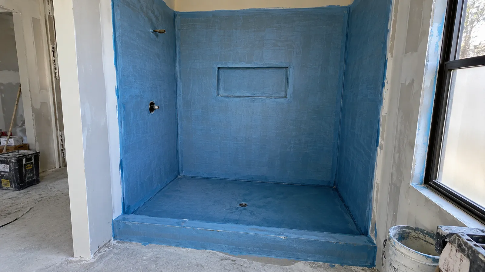
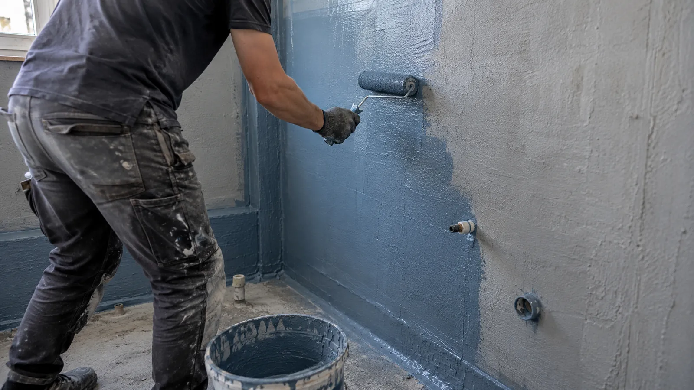
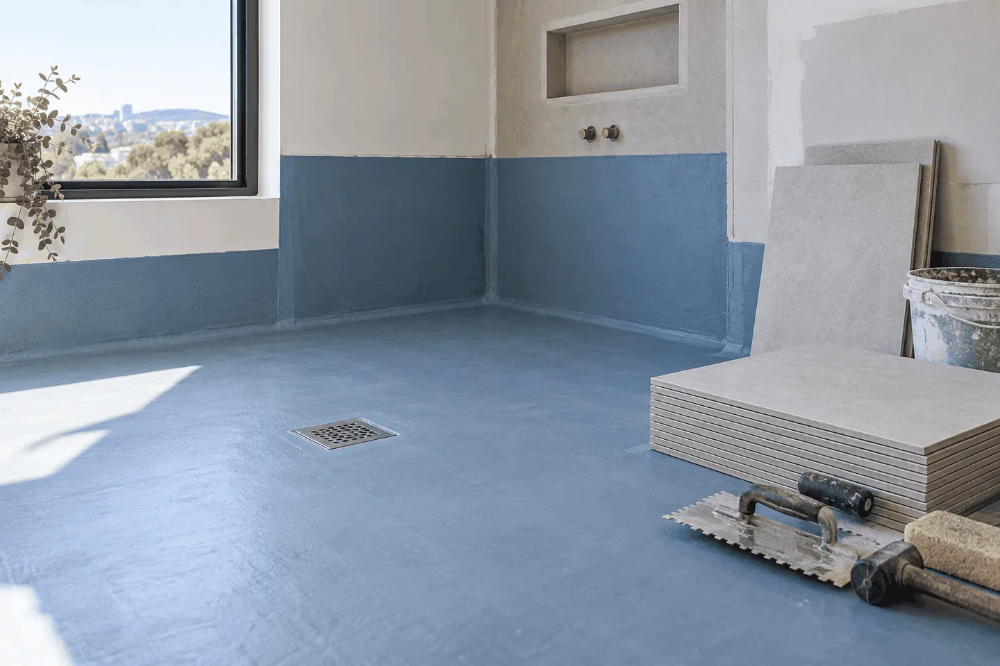
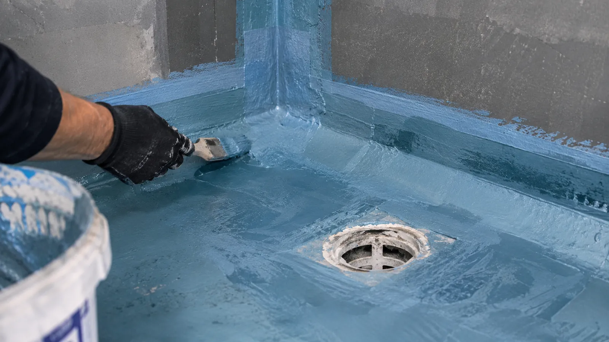
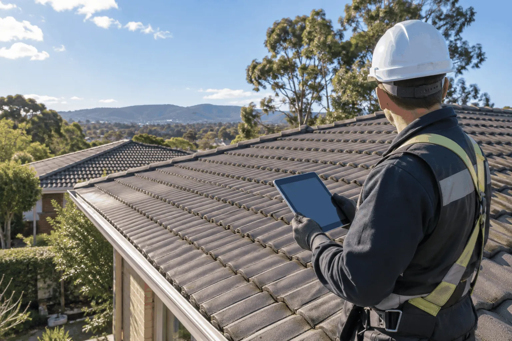
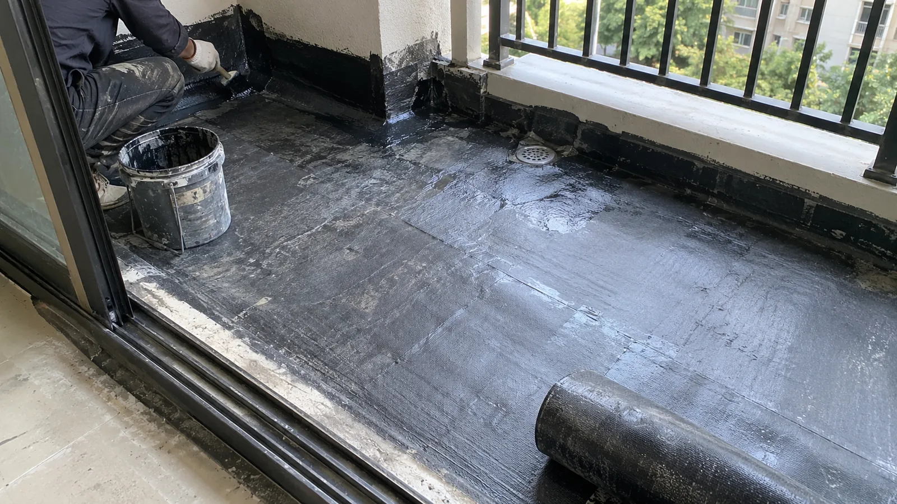
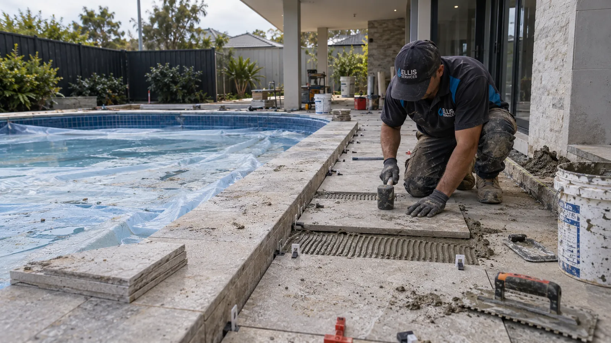

Bathroom waterproofing
Shower and bathroom membranes, wet junctions and existing leak assessment.
View service details →Waterproofing services

We install waterproofing membranes and repair water-entry problems in bathrooms, kitchens and laundries, as well as balconies, roofs, pools and exterior walls. Our team handles preparation and membrane details, coordinates the tiled finish and gives you a clear written quote.
GET YOUR PROJECT QUOTE ↗0425 170 688Choose the room or surface you need protected. We handle new membranes and existing leaks, with repairs focused on the source of the water and the finished surface.
For an existing shower leak, arrange shower leak assessment before choosing a repair.
Membranes and damp-area assessment around internal floors, walls and wet junctions.

Shower and bathroom membranes, wet junctions and existing leak assessment.
View service details →
Moisture-exposed kitchen floors and wet junctions, coordinated with retained cabinets.
View service details →Floor wastes, wall-floor junctions and penetrations around laundry appliances.
View service details →
Assessment of an existing damp space not covered by the named room services.
View service details →Waterproofing enquiries for weather-exposed surfaces and pool interiors.

Rain-related water entry, accessible roof junctions and repair suitability.
View service details →
Exposed membranes, thresholds, outlets and water entry beneath balcony tiles.
View service details →
Pool interior preparation, waterproofing and junction detailing for the selected lining and finish.
View service details →Accessible wall surfaces, exposed edges and adjoining water-entry junctions.
View service details →Service details: Open Bathroom waterproofing →
Service details: Open Bathroom waterproofing →
Service details: Open Laundry waterproofing →
Service details: Open Roof waterproofing →
Service details: Open Kitchen waterproofing →
Service details: Open Pool waterproofing →
Service details: Open External wall, edge and corner waterproofing →
Service details: Open Balcony waterproofing →
Service details: Open Other damp areas →
We select the waterproofing system around your bathroom, laundry, balcony, roof or pool. Under-tile, exposed and permanently immersed areas need different product suitability checks. We coordinate the primer, membrane, corners, penetrations and compatible finish as a complete build-up.
Your written quote identifies surface preparation, membrane coverage, junction details and any protective finish or tiling included. We confirm separate plumbing work and trade handovers before work begins. Photos are optional: handyman.lyric@outlook.com.